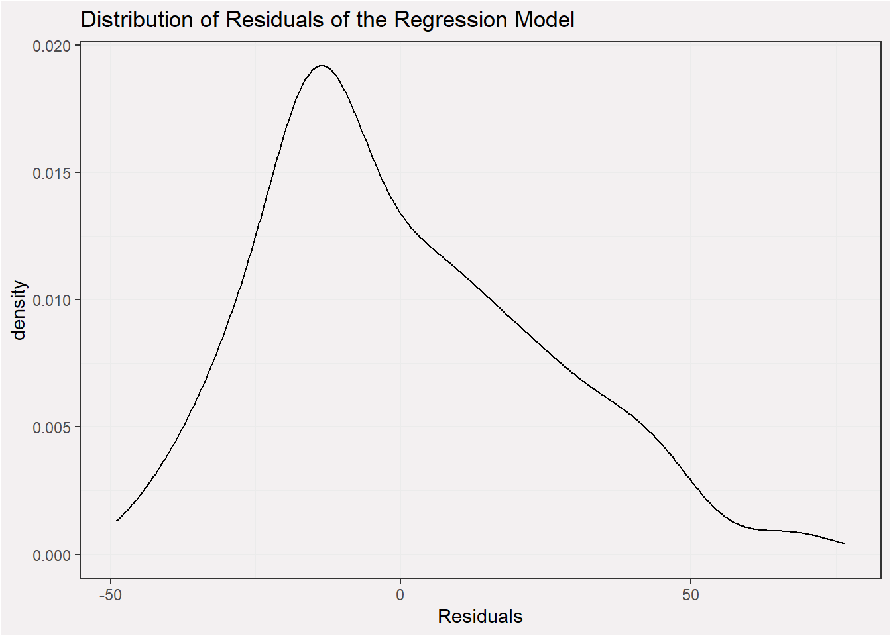
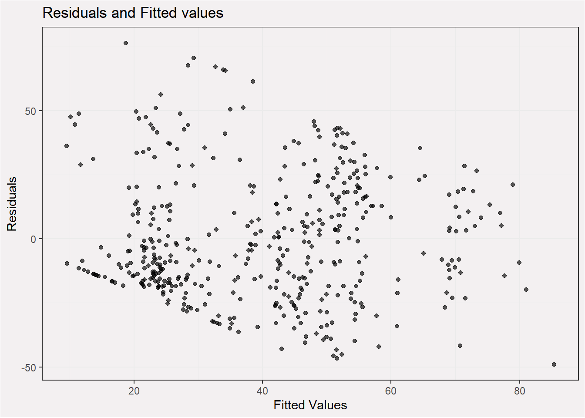

| Sub District | Total Population | Total SC Population | Total ST Population | Total Area of Vilalges | Total Area Sown (Net) |
|---|---|---|---|---|---|
| Bardoli | 147733 | 5642 | 90557 | 36692.22 | 29945.74 |
| Chorasi | 86225 | 2602 | 18261 | 17287.86 | 12163.10 |
| Kamrej | 178417 | 9509 | 57900 | 37131.14 | 31061.31 |
| Mahuva | 144906 | 2174 | 117675 | 35401.04 | 26933.55 |
| Mandvi | 177735 | 1714 | 145183 | 72569.36 | 41305.01 |
| Mangrol | 163598 | 6166 | 89133 | 56110.75 | 30925.86 |
| Olpad | 162884 | 6648 | 44361 | 67413.42 | 42846.33 |
| Palsana | 86888 | 4084 | 39357 | 18804.29 | 15976.44 |
| Umarpada | 83723 | 101 | 80986 | 26071.04 | 12815.45 |
District Level Report - Kheda
Introduction - Surat
This report aims to provide a birds eye view of the district through the lens of village amenities data released by census in 2011. Before moving towards the descriptive insights from the census data, here is what pops up when a search is executed for Surat district Gujarat on wikipedia.
Summary Statistics
Total Number of Villages: 713
Total Number of Gram Panchayat: 516
Total Number of Sub Districts: 9
Total Population : 1.232109^{6}
Statistical Summaries at the subdistrict level
Population and Geographical Area
It is of interest to look into which are the most densely populated villages. We can do this by creating a simple scatter plot between population of village and the total geographical area of a village.
Irrigation for Agriculture
The census provides the net area sown (hectares) in a village along with area irrigated with water source in hectares. The area under irrigation may be affected by several factors.
Area Sown vs Area under Irrigation
A distribution for the percentage of area irrigated will be interesting to look at.
Understanding what drives area under irrigation
Much is heard about rain fed agriculture in India. There are several factors that can affect area under irrigation - ranging from government supports, demographics, distance from urban clusters and several known and unknown variables. With the given data we can check if the following variables have any relation with area under irrigation:
- Percentage of Marginalised group population in village
- Distance from Major government offices
- Distance from urban center
- Total population of a village
A simple Linear regression to see if the above explanation has any merit
| Dependent variable: | |
| perc_irrigated_over_net_sown | |
| total_population_of_village | -0.001 |
| (0.001) | |
| perc_marginalised_pop | 0.010 |
| (0.052) | |
| district_head_quarter_distance_in_km | -0.432*** |
| (0.093) | |
| sub_district_head_quarter_distance_in_km | -0.148 |
| (0.134) | |
| nearest_statutory_town_distance_in_km | -0.190** |
| (0.081) | |
| sub_district_nameChorasi | 0.775 |
| (5.580) | |
| sub_district_nameKamrej | 7.798* |
| (4.440) | |
| sub_district_nameMahuva | 11.531*** |
| (4.059) | |
| sub_district_nameMandvi | -8.875** |
| (3.911) | |
| sub_district_nameMangrol | -22.223*** |
| (3.947) | |
| sub_district_nameOlpad | -3.733 |
| (4.448) | |
| sub_district_namePalsana | 2.691 |
| (4.864) | |
| sub_district_nameUmarpada | -39.889*** |
| (6.189) | |
| Constant | 102.158*** |
| (5.649) | |
| Observations | 667 |
| R2 | 0.511 |
| Adjusted R2 | 0.501 |
| Residual Std. Error | 24.051 (df = 653) |
| F Statistic | 52.464*** (df = 13; 653) |
| Note: | p<0.1; p<0.05; p<0.01 |
Model Diagnostic plots


Note
This is to serve as a minimal example of creating parameterised reports with .rmd/.qmd files. This document is in no way analytically or statistically rigorous.